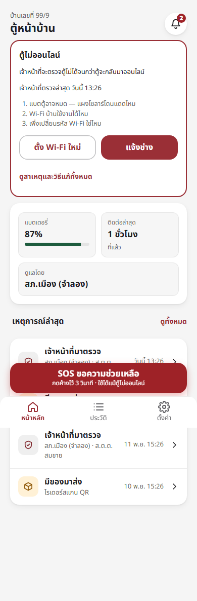
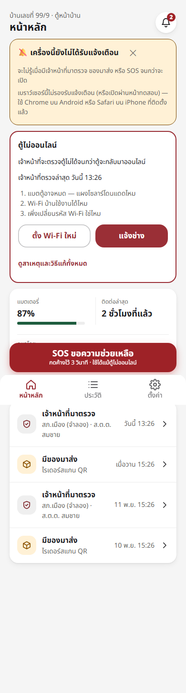
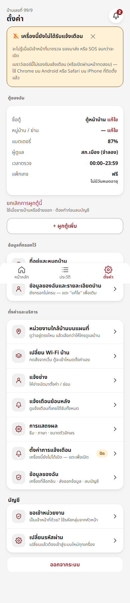
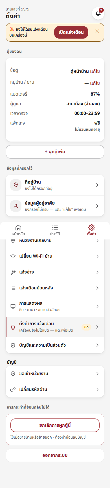
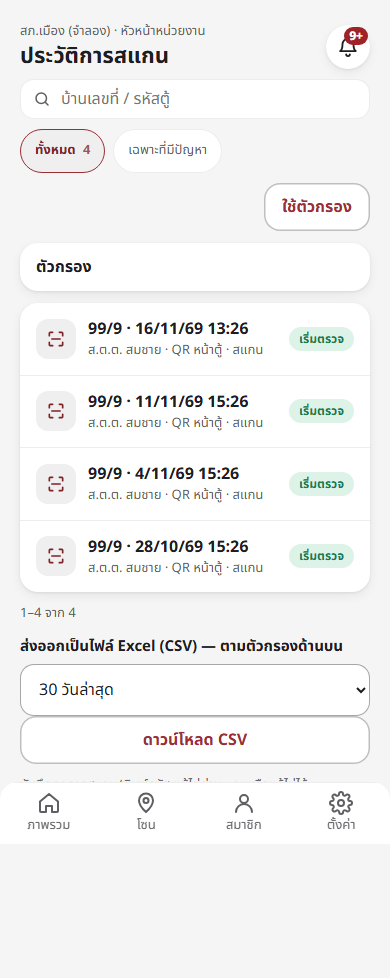
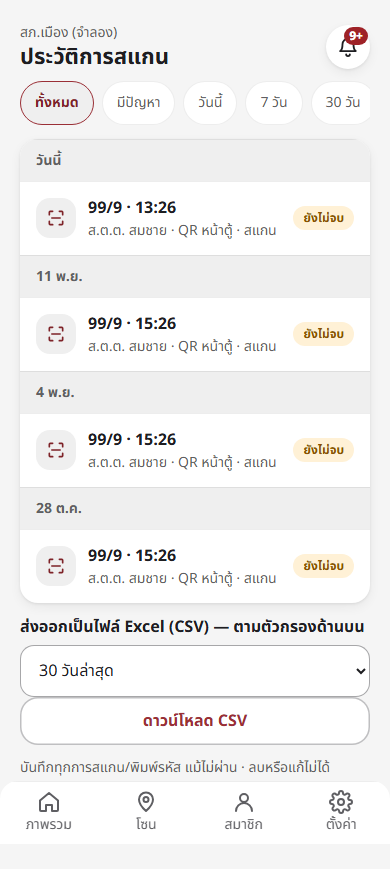
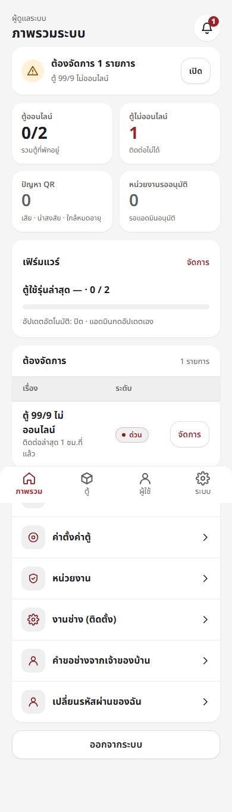
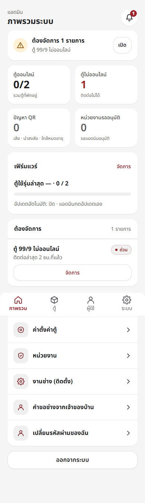
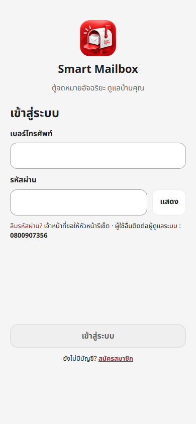
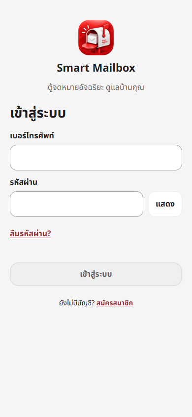

ชุดเต็มอยู่ที่ ux-redesign/shots/before|after — 216 ภาพต่อชุด (3 โหมด × 2 ธีม × 390/1440)
| หน้า | ก่อน | หลัง |
|---|---|---|
| เจ้าของบ้าน · หน้าหลัก |  |  |
| เจ้าของบ้าน · ตั้งค่า |  |  |
| หัวหน้า · ประวัติ |  |  |
| แอดมิน · ภาพรวม |  |  |
| เข้าสู่ระบบ |  |  |